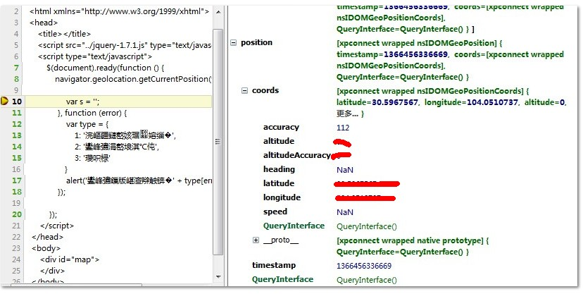

导航
【初探HTML5之使用新标签布局】用html5布局我的博客页！
【HTML5初探之form标签】解放表单验证、增加文件上传、集成拖放
【HTML5初探之绘制图像（上）】看我canvas元素引领下一代web页面
【HTML5初探之绘制图像（下）】看我canvas元素引领下一代web页面
【HTML5初探之多媒体元素】视频播放HTML5、Flash谁才是王道？
【HTML5初探之通信API】跨域门槛不再高、数据推送不是梦
【HTML5初探之Geolocation API】让我们来回去地理信息
前言
从最开始学习HTML5到今天刚刚一个星期，明天还可以玩一天呢！
15号我意识到自己确实无法忍受自己死寂的工作生活了，若是听之任之，自己必然废之，你们一定明白那种感觉的，
每天都会非常有压力的想进步，每天都会想看书，但是每天却贪生怕死的玩游戏，看网页，看电影如此荒废岁月。
那天下午，我落寞的看着屏幕，在屏幕中看见了我空洞寂寞的脸，于是我想到了改变。
一直到今天我深刻的感觉到了自己的变化，若是照此下去，我的理想没准真的能实现呢！
好吧，希望自己好好的坚持下去，用21天形成一个习惯，用行动改变自己的人生吧！
Geolocation API
在HTML5中为window.navigation新增了一个geolocation属性，可以通过getCurrentPosition获取到当前地理位置信息：
navigation.geolocation.getCurrentPosition( function (position) {}, function (error) {}, opts ); 第一与第二个都是函数，一个用于成功时一个用于失败时调用； 其中第二个函数的错误码为： 1 用户拒绝位置服务 2 获取不到位置信息 3 获取信息超时 第三个参数为一可选属性列表（js对象） 1 enableHighAccuracy 要求高精度信息 2 timeout 设置超时时间 3 maximumAge 数据信息过期时间
使用watchPosition方法可持续获取用户当前位置信息：
int watchCurrentPosition(onSucc, onError, opts) 与上面的方法参数一致
我们这里详细说说调用成功后返回的position对象：
该对象具有以下信息： 1 latitude 纬度 2 longitude 经度 3 altitude 海拔高度
4 accuracy 获取经度纬度（米）
5 altitudeAccurancy 获取海拔（米）
6 heading 设备朝向
7 speed 前进速度
8 timestamp 获取地理位置信息时的时间戳
说干就干，我们来试试：
 获取地理信息
获取地理信息

1 <!DOCTYPE html> 2 <html xmlns="http://www.w3.org/1999/xhtml"> 3 <head> 4 <title></title> 5 <script src="../jquery-1.7.1.js" type="text/javascript"></script> 6 <script type="text/javascript"> 7 $(document).ready(function () { 8 navigator.geolocation.getCurrentPosition(function (position) { 9 10 var s = ''; 11 }, function (error) { 12 var type = { 13 1: '位置服务被拒绝', 14 2: '获取不到信息', 15 3: '超时' 16 } 17 alert('获取数据失败：' + type[error.code]); 18 }); 19 20 }); 21 </script> 22 </head> 23 <body> 24 <div id="map"> 25 </div> 26 </body> 27 </html>

还真获取到了的说！！！
地理位置是敏感信息机密数据，大家使用时要谨慎！！！
无图无真相，与强大的google结合使用，与google地图结合使用：
在地图上显示
1 <!DOCTYPE html> 2 <html xmlns="http://www.w3.org/1999/xhtml"> 3 <head> 4 <title></title> 5 <script src="../jquery-1.7.1.js" type="text/javascript"></script> 6 <script type="text/javascript" src="http://maps.google.com/maps/api/js?sensor=false"></script> 7 <script type="text/javascript"> 8 $(document).ready(function () { 9 var init = function () { 10 navigator.geolocation.getCurrentPosition(function (position) { 11 var c = position.coords; 12 //设定地图参数，将当前位置的纬度，经度设为地图中心点 13 // var latlng = new google.maps.LatLng(c.latitude, c.longitude); 14 var latlng = new google.maps.LatLng(position.coords.latitude, position.coords.longitude); 15 16 var opt = { 17 zoom: 14, 18 center: latlng, 19 mapTypeId: google.maps.MapTypeId.ROADMAP 20 }; 21 //创建地图并显示在div 22 var map = new google.maps.map($('#map')[0], opt); 23 //在地图上创建标记 24 var marker = new google.maps.Marker({ 25 position: latlng, 26 map: map 27 }); 28 29 //设定标注窗口，指定文字 30 var marker = new google.maps.Marker({ 31 position: latlng, 32 map: map, 33 title: "You are here! (at least within a " + position.coords.accuracy + " meter radius)" 34 }); 35 var s = ''; 36 }, function (error) { 37 var type = { 38 1: '位置服务被拒绝', 39 2: '获取不到信息', 40 3: '超时' 41 } 42 alert('获取数据失败：' + type[error.code]); 43 }); 44 } 45 46 window.init = init; 47 // init(); 48 }); 49 </script> 50 </head> 51 <body> 52 <button onclick="init();"> 53 显示</button> 54 <div id="map"> 55 </div> 56 <script> 57 var gaJsHost = (("https:" == document.location.protocol) ? "https://ssl." : "http://www."); 58 document.write(unescape("%3Cscript src='" + gaJsHost + "google-analytics.com/ga.js' type='text/javascript'%3E%3C/script%3E")); 59 </script> 60 61 <script type="text/javascript" src="http://www.google-analytics.com/ga.js"> 62 </script> 63 </body> 64 </html>
注意：我在这里一直报个错，
TypeError: google.maps.LatLng is not a constructor
这个错错的我都无语了。。。。搞了很久找不到答案，哪位大侠知道告知我一下！！！
结语
原来一直舍不得学习HTML5，这次却一个星期大概学完了，不敢说什么都会，但是基本都有个印象了，不会像原来那么没底了。
好了，我继续找那个问题去了。